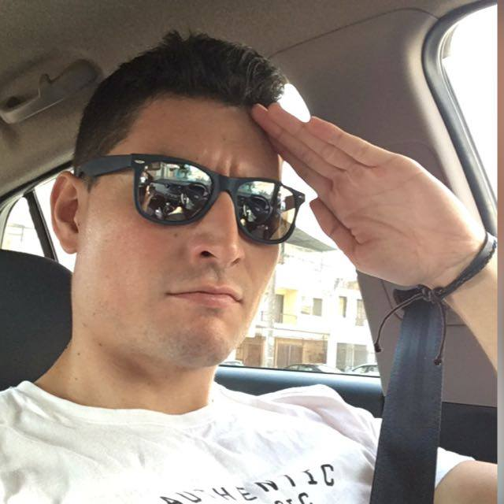

Datos Personales
Nombre: Roberto Ignacio Velásquez Ballesteros.
Fecha de Nacimiento: 27 de Febrero de 1991.
Lugar de nacimiento: Antofagasta, Chile.
Enlaces a:
Información Personal
Perfil
Ingeniero Civil Industrial de la Universidad Católica del Norte, contando con experiencia en faenas mineras en el área de Adquisiciones y Contratos.
He gestionado proyectos a traves de la Planificación Estrategica de Negocios para adquirir financiamientos publicos.
Además de poseer habilidades de liderazgo y trabajo en equipos multidisciplinarios. Y haber cursado un curso de inglés avanzado en la ciudad de Sydney, Australia.